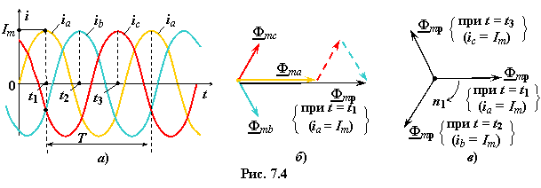
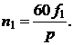

7.1.3. Вращающееся магнитное поле статора
При подключении двигателя к трехфазной сети в обмотках статора протекают токи ia, ib и ic (рис. 7.4а). МДС каждой обмотки создаёт магнитный поток, вектор которого совпадает с осью соответствующей катушки. Если ток ia = Im, то ток ib = ic = Im/2 (при t = t1, рис. 7.4а). При этом вектор результирующего магнитного потока Фmp = Фma + Фmb + Фmc совпадает с осью катушки С1 − С4 (фаза А) (рис. 7.4б). В моменты времени t = t2 и t = t3 (см. рис. 7.4a) результирующий вектор Фmp будет совпадать с осями катушек соответственно С2 − С5 (фаза В) и С3 − С6 (фаза С) (рис. 7.4в). Очевидно, что за один период Т изменения напряжения сети (см. рис. 7.4а) вектор Фmp результирующего магнитного поля сделает один оборот.
|  |
Таким образом, МДС трёх обмоток статора, расположенных в пространстве под углом 120° друг к другу, при подключении их к трёхфазной сети синусоидального тока создают вращающееся магнитное поле (в. м. п.), аналогичное по форме магнитному полю вращающегося двухполюсного магнита (с одной парой р
полюсов) с подобным распределением магнитной индукции на полюсах.
В общем случае частота вращения n1 в. м. п. (называемая синхронной частотой вращения) зависит от частоты напряжения сети f1 и числа пар р полюсов, определяемого числом катушек статора, т.е.
 (7.1)
Так как число пар полюсов р натурального ряда (р = 1, 2, 3, 4 и т. д.), то при f1 = 50 Гц возможны следующие значения синхронной частоты вращения n1 3000, 1500, 1000, 750 об/мин и т. д., т.е. для двухполюсной машины (при трёх статорных катушках) n1 = 60f1 = 3000 об/мин; для четырёхполюсной машины (при шести статорных катушках) n1 = 60f1/р = 60×50/2 = 1500 об/мин и т. д.